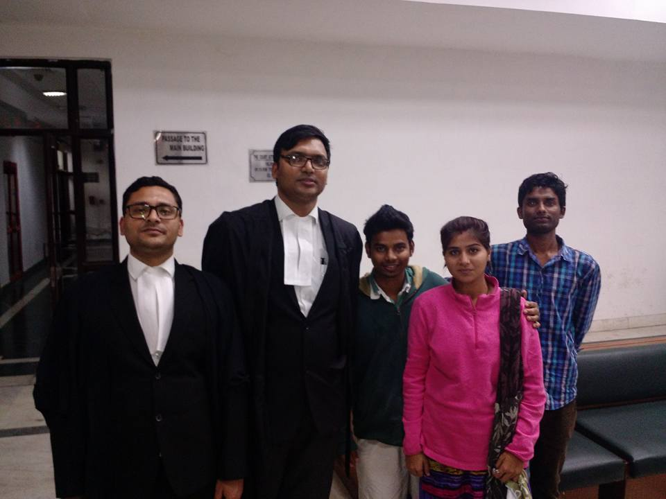

राष्ट्रीय
राष्ट्रीयसुप्रीम कोर्ट से राहुल गांधी को राहत, आय से अधिक संपत्ति मामले में हाईकोर्ट का आदेश रद्द
सुप्रीम कोर्ट ने आय से अधिक संपत्ति के मामले में राहुल गांधी को राहत देते हुए इलाहाबाद हाईकोर्ट का आदेश रद्द कर दिया है। अदालत ने मामले को नए सिरे से विचार के लिए वापस हाईकोर्ट भेज दिया है।
ताज़ा ख़बरें
 टेक
टेकDRDO विकसित कर रहा है घातक स्टील्थ कॉम्बैट ड्रोन, मिलेगा जेट इंजन
रक्षा अनुसंधान और विकास संगठन (DRDO) घातक नामक स्टील्थ कॉम्बैट ड्रोन का प्रोटोटाइप विकसित कर रहा है। यह जेट इंजन से लैस यूसीएवी दुश्मन के इलाके में गहराई तक सटीक हमला करने में सक्षम होगा।
राष्ट्रीयअसम में दो आईपीएस अधिकारियों के बीच मारपीट, डीआईजी और एसएसपी भिड़े
असम के कोकराझार में एक पार्टी के दौरान डीआईजी और एसएसपी के बीच मारपीट हो गई। मुख्यमंत्री हिमंत बिस्वा सरमा ने डीजीपी को मामले को सुलझाने की जिम्मेदारी सौंपी है।
राष्ट्रीयबिलासपुर के वृद्धाश्रम में 75 साल के कन्हैया और 63 साल की सबीना ने रचाई शादी
हिमाचल प्रदेश के बिलासपुर स्थित वृद्धाश्रम में 75 वर्षीय कन्हैया लाल और 63 वर्षीय सबीना ने पारंपरिक रीति-रिवाजों से विवाह कर जीवन की नई शुरुआत की है।
 अंतरराष्ट्रीय
अंतरराष्ट्रीयतुर्किये में सैन्य हेलिकॉप्टर दुर्घटनाग्रस्त, वायुसेना के पांच जवानों की मौत
तुर्किये में प्रशिक्षण उड़ान के दौरान वायुसेना का AS-532 कूगर हेलिकॉप्टर क्रैश हो गया। इस हादसे में पांच क्रू सदस्यों की मौत हो गई है। पिछले दो हफ्तों में देश में यह दूसरा सैन्य हेलिकॉप्टर हादसा है।
 राष्ट्रीय
राष्ट्रीययूपी में सपा और कांग्रेस के बीच सीट बंटवारे पर फंसे पेंच की पांच वजहें
उत्तर प्रदेश विधानसभा चुनाव के लिए समाजवादी पार्टी और कांग्रेस के बीच सीट बंटवारे पर गतिरोध जारी है। सीटों की संख्या, मजबूत सीटों की मांग और राजनीतिक महत्वाकांक्षाओं को लेकर दोनों दलों में मतभेद बने हुए हैं।
राष्ट्रीयमोकामा विधायक अनंत सिंह की बेटी की शादी की भव्य तैयारियां
मोकामा विधायक अनंत सिंह की बेटी की शादी में पांच लाख मेहमानों के आने की संभावना है। इसके लिए विशेष इंतजाम किए गए हैं और दो हेलिपैड भी बनाए जा रहे हैं।
 राष्ट्रीय
राष्ट्रीयउत्तर प्रदेश चुनाव 2027: समाजवादी पार्टी गुरुवार को जारी करेगी जन-मन घोषणा पत्र
उत्तर प्रदेश विधानसभा चुनाव 2027 के मद्देनजर समाजवादी पार्टी संविधान दिवस पर अपना 'जन-मन घोषणा पत्र' जारी करेगी। पार्टी का मुख्य फोकस 'पीडीए' और महिलाओं को सालाना ₹40,000 की आर्थिक मदद देने पर है।
 राष्ट्रीय
राष्ट्रीयगोवा चुनाव 2027: कांग्रेस ने विपक्षी दलों से गठबंधन और उम्मीदवारों के चयन पर बढ़ाई रफ्तार
गोवा विधानसभा चुनाव 2027 की तैयारियों के तहत कांग्रेस ने जीएफपी और आरजीपी के साथ गठबंधन की बातचीत तेज कर दी है। दिल्ली में हुई बैठक में उम्मीदवारों के जल्द चयन और भाजपा सरकार के खिलाफ साझा अभियान चलाने पर चर्चा हुई।

राष्ट्रीयसौराभ दास के विदेश जाने पर रोक के खिलाफ दिल्ली हाई कोर्ट में याचिका
सिटीजंस फॉर जस्टिस एंड पीस के सौराभ दास ने पासपोर्ट में विसंगति के आधार पर विदेश यात्रा रोकने के फैसले को दिल्ली हाई कोर्ट में चुनौती दी है। मामले पर गुरुवार को सुनवाई होगी।
व्यापारटाटा मोटर्स ने बढ़ाई कीमतें, 1 दिसंबर से महंगी होंगी सभी कारें
टाटा मोटर्स ने लागत बढ़ने का हवाला देते हुए 1 दिसंबर 2026 से अपनी सभी पैसेंजर गाड़ियों की कीमतों में औसतन 0.5 प्रतिशत की बढ़ोतरी का ऐलान किया है।
राष्ट्रीयबागपत के स्कूल में वेतन घोटाला, बिना स्कूल आए वेतन लेते रहे दो शिक्षक
बागपत के एक इंटर कॉलेज में बिना स्कूल आए सरकारी वेतन लेने का मामला सामने आया है। एक शिक्षक 14 साल और शिक्षिका सात साल से अनुपस्थित थे। शिकायत के बाद जांच में पुष्टि होने पर दोनों को निलंबित कर दिया गया है।
राष्ट्रीयकांग्रेस गठबंधन के बीच शायराना अंदाज में इमरान प्रतापगढ़ी की नसीहत
कांग्रेस और समाजवादी पार्टी के बीच गठबंधन की चर्चाओं के बीच पार्टी नेताओं में शायरी के जरिए बयानबाजी शुरू हो गई है। इमरान प्रतापगढ़ी ने बेवजह की बातों से बचने की सलाह दी है।
 राष्ट्रीय
राष्ट्रीयलद्दाख स्वायत्त पहाड़ी विकास परिषद चुनाव में ईवीएम की जगह इस्तेमाल होंगे मतपत्र
लद्दाख में 4 दिसंबर को होने वाले स्वायत्त पहाड़ी विकास परिषद (LAHDC) के चुनाव इलेक्ट्रॉनिक वोटिंग मशीन की जगह पारंपरिक मतपत्रों से कराए जाएंगे।
 राष्ट्रीय
राष्ट्रीयविदेशों में बैठे गैंगस्टर भारतीय जेलों के जरिए चला रहे हैं आपराधिक नेटवर्क
एनआईए ने खुलासा किया है कि विदेशों में छिपे गैंगस्टर भारतीय जेलों में बंद कैदियों के जरिए हत्या और उगाही का नेटवर्क चला रहे हैं। जेलों में मोबाइल की पहुंच और कर्मचारियों की भूमिका बड़ी चुनौती बनी हुई है।
 राष्ट्रीय
राष्ट्रीयकेंद्रीय कैबिनेट की बैठक आज, संसद के शीतकालीन सत्र के एजेंडे पर होगी चर्चा
प्रधानमंत्री नरेंद्र मोदी की अध्यक्षता में आज केंद्रीय कैबिनेट की बैठक होगी। इसमें संसद के आगामी शीतकालीन सत्र में पेश होने वाले विधेयकों और सरकारी नीतियों की रणनीति पर चर्चा की संभावना है।
राष्ट्रीयउत्तर प्रदेश चुनाव: समाजवादी पार्टी के साथ सीट शेयरिंग पर 120 सीटों पर अड़ी कांग्रेस
उत्तर प्रदेश विधानसभा चुनाव के लिए समाजवादी पार्टी और कांग्रेस के बीच सीट बंटवारे को लेकर बातचीत जारी है। सूत्रों के मुताबिक, कांग्रेस पार्टी 120 सीटों की मांग पर अड़ी हुई है।
राष्ट्रीयकेरल: सोशल मीडिया पर विज्ञापन वाली फेयरनेस क्रीम से लड़की की किडनी खराब
केरल में सोशल मीडिया पर विज्ञापन देखकर खरीदी गई फेयरनेस क्रीम के इस्तेमाल से 17 साल की एक लड़की को गंभीर किडनी की बीमारी हो गई। लैब जांच में क्रीम में तय सीमा से बहुत ज्यादा पारा (मरकरी) पाया गया है।
 राष्ट्रीय
राष्ट्रीयकार्तिक पूर्णिमा: उत्तर प्रदेश के तीर्थस्थलों पर 30 लाख श्रद्धालुओं ने किया स्नान
कार्तिक पूर्णिमा पर उत्तर प्रदेश के प्रमुख तीर्थस्थलों पर करीब 30 लाख श्रद्धालुओं ने गंगा और सरयू में स्नान किया। अकेले प्रयागराज में 10 लाख लोग पहुंचे, जबकि काशी के घाटों पर दीपोत्सव मनाया गया।
 अंतरराष्ट्रीय
अंतरराष्ट्रीयभारत समेत कई देशों पर अमेरिकी टैरिफ का खतरा, इंडस्ट्रियल सब्सिडी पर ट्रंप प्रशासन की तैयारी
डोनाल्ड ट्रंप प्रशासन घरेलू उद्योगों को सब्सिडी देने के आरोपों के तहत भारत, चीन और यूरोपीय संघ समेत कई प्रमुख अर्थव्यवस्थाओं पर नया आयात शुल्क लगाने की तैयारी कर रहा है।
 अंतरराष्ट्रीय
अंतरराष्ट्रीयदुबई में बन रहा दुनिया का सबसे बड़ा एयरपोर्ट, 26 करोड़ यात्रियों की होगी क्षमता
दुबई में अल मकतूम इंटरनेशनल एयरपोर्ट का निर्माण किया जा रहा है, जो मौजूदा दुबई इंटरनेशनल एयरपोर्ट से पांच गुना बड़ा होगा और यहां सालाना 26 करोड़ यात्री यात्रा कर सकेंगे.
 अंतरराष्ट्रीय
अंतरराष्ट्रीयअमेरिका में गुलामी के इतिहास को लेकर विवाद, ट्रंप प्रशासन पर मुकदमा
फिलाडेल्फिया में जॉर्ज वाशिंगटन के घर की प्रदर्शनी से गुलामों की कहानी हटाने पर विवाद खड़ा हो गया है। संरक्षण समूहों ने ट्रंप प्रशासन के खिलाफ अदालत में मुकदमा दायर किया है।
राष्ट्रीयतनीषा मुखर्जी ने नितेश तिवारी की रामायण पर दी प्रतिक्रिया, साई पल्लवी को बताया गलत चयन
अभिनेत्री तनीषा मुखर्जी ने नितेश तिवारी की फिल्म रामायण की समीक्षा की है। उन्होंने रणबीर कपूर और यश के अभिनय की तारीफ की, लेकिन सीता की भूमिका के लिए साई पल्लवी के चयन को लेकर असहमति जताई।
 खेल
खेलवैभव सूर्यवंशी की आतिशी पारी पर पाकिस्तान के पूर्व क्रिकेटरों की प्रतिक्रिया
एशिया कप राइजिंग स्टार्स में यूएई के खिलाफ 15 वर्षीय वैभव सूर्यवंशी के रिकॉर्ड दोहरे शतक की पाकिस्तान के पूर्व क्रिकेटरों ने जमकर तारीफ की है।
 टेक
टेकपहला निजी PSLV-N1 मार्च 2027 तक होगा लॉन्च, इसरो चीफ ने गगनयान पर दी जानकारी
इसरो प्रमुख वी. नारायणन ने कहा कि देश का पहला निजी तौर पर निर्मित PSLV-N1 अगले साल मार्च तक लॉन्च किया जाएगा। उन्होंने स्पष्ट किया कि गगनयान मिशन में कोई देरी नहीं हुई है और यह अपने अंतिम चरण में है।
 अंतरराष्ट्रीय
अंतरराष्ट्रीयचीन ने शेनझोउ-24 मिशन लॉन्च किया, पाकिस्तानी अंतरिक्ष यात्री भी शामिल
चीन ने बुधवार को शेनझोउ-24 अंतरिक्ष मिशन लॉन्च किया। इस अभियान के तहत तीन अंतरिक्ष यात्रियों को तियांगोंग स्पेस स्टेशन भेजा जा रहा है, जिसमें पाकिस्तान के ज़ीशान अली भी शामिल हैं।
 खेल
खेलIPL 2027 ऑक्शन: आर्यवीर सहवाग और डेविड वार्नर ने कराया रजिस्ट्रेशन
आईपीएल 2027 की नीलामी के लिए आर्यवीर सहवाग और डेविड वार्नर सहित कई प्रमुख खिलाड़ियों ने रजिस्ट्रेशन कराया है। बीसीसीआई ने फ्रेंचाइजियों को खिलाड़ियों की अंतिम सूची सौंप दी है।
राष्ट्रीयबाबा रामदेव और धीरेंद्र कृष्ण शास्त्री के बीच बयानों को लेकर उपजा विवाद
योगगुरु बाबा रामदेव और बागेश्वर धाम के पीठाधीश्वर धीरेंद्र कृष्ण शास्त्री के बयानों को लेकर संतों के बीच जुबानी जंग शुरू हो गई है, हालांकि दोनों पक्षों ने बाद में स्पष्टीकरण दिया है।
राष्ट्रीयबिना दाने की लगातार खुजली हो सकती है लिवर की समस्या का संकेत
बिना किसी दाने के लगातार होने वाली खुजली को नजरअंदाज करना खतरनाक हो सकता है। डॉक्टरों के अनुसार यह लिवर में पित्त का प्रवाह धीमा होने का लक्षण हो सकता है।
 राष्ट्रीय
राष्ट्रीयऑपरेशन सिंदूर के दौरान तीन चीनी सैटेलाइट्स ने की थी भारत के पश्चिमी तट की निगरानी
भारतीय अंतरिक्ष निगरानी कंपनी डिगंतारा की रिपोर्ट के अनुसार, मई 2025 में 'ऑपरेशन सिंदूर' के दौरान तीन चीनी सैटेलाइट्स ने भुज, जामनगर और महत्वपूर्ण औद्योगिक क्षेत्रों की गतिविधियों पर नजर रखी थी।
खेलIPL 2027 नीलामी के लिए रजिस्ट्रेशन आंकड़े आए सामने, 66 स्थानों के लिए 1,220 खिलाड़ी मैदान में
आईपीएल 2027 की आगामी नीलामी के लिए कुल 1,220 खिलाड़ियों ने पंजीकरण कराया है, जिनमें से 66 रिक्त स्थानों के लिए मुकाबला होगा। इसमें 170 कैप्ड अंतरराष्ट्रीय और 14 कैप्ड भारतीय खिलाड़ी शामिल हैं।
 व्यापार
व्यापारगोल्ड लोन डिफॉल्ट में दोगुना उछाल, बकाया कर्ज बढ़कर ₹3.74 लाख करोड़ हुआ
देश में गोल्ड लोन का एनपीए अनुपात बढ़कर 0.30% हो गया है। सितंबर 2026 तक कुल बकाया कर्ज ₹3.74 लाख करोड़ तक पहुंच गया है।
 राष्ट्रीय
राष्ट्रीयराजस्थान और मध्य प्रदेश में शीतलहर का अलर्ट, कई इलाकों में पारा 10 डिग्री से नीचे
पहाड़ी राज्यों में बर्फबारी के बाद राजस्थान और मध्य प्रदेश में शीतलहर का अलर्ट जारी किया गया है। मैदानी इलाकों में तापमान में लगातार गिरावट दर्ज की जा रही है, जबकि दिल्ली की हवा लगातार 10वें दिन खराब श्रेणी में बनी हुई है।
 राष्ट्रीय
राष्ट्रीयआईसीएमआर सर्वेक्षण: देश के दो तिहाई किशोरों में विटामिन बी12 की कमी
आईसीएमआर और राष्ट्रीय पोषण संस्थान के सर्वेक्षण में देश के किशोरों और वयस्कों में विटामिन बी12 की कमी व्यापक स्तर पर पाई गई है।
 अंतरराष्ट्रीय
अंतरराष्ट्रीयअमेरिकी खुफिया एजेंसी CIA पर साइबर हमला, डेटाबेस में लगाई गई सेंध
अमेरिकी खुफिया एजेंसी CIA के ओपन-सोर्स डेटाबेस पर साइबर हमला हुआ है, जिससे अमेरिकी खुफिया तंत्र की सुरक्षा को लेकर चिंता बढ़ गई है।
अंतरराष्ट्रीययमन में अदन के करीब पहुंचे हूती विद्रोही, सेना ने बढ़ाई सुरक्षा
यमन में ईरान समर्थित हूती विद्रोही अंतरराष्ट्रीय मान्यता प्राप्त सरकार के केंद्र अदन से 60 किमी दूर पहुंच गए हैं। यमनी सेना ने शहर की सुरक्षा के लिए मजबूत मोर्चा तैयार किया है।
राष्ट्रीयमहिला के साथ डांस का वीडियो वायरल होने पर दिल्ली पुलिस इंस्पेक्टर लाइन हाजिर
दिल्ली पुलिस के एक इंस्पेक्टर का महिला के साथ डांस करते हुए वीडियो सोशल मीडिया पर वायरल होने के बाद उन्हें लाइन हाजिर कर दिया गया है। विभाग इस मामले की जांच कर रहा है।
 अंतरराष्ट्रीय
अंतरराष्ट्रीयसऊदी अरब की राजधानी रियाद पर हूती विद्रोहियों का हमला, दो भारतीय घायल
सऊदी अरब की राजधानी रियाद में हूती विद्रोहियों के हमले में दो भारतीयों समेत 11 लोग घायल हो गए हैं। सऊदी में भारतीय दूतावास ने नागरिकों से सतर्क रहने की अपील की है।
 टेक
टेकएनवीडिया के सीईओ जेन्सेन हुआंग ने की वापसी, अपनी गलतियों के लिए मांगी माफी
एनवीडिया के मुख्य कार्यकारी अधिकारी जेन्सेन हुआंग कंपनी में अपनी वापसी के बाद कर्मचारियों से मिले। उन्होंने आचार संहिता के उल्लंघन और अपनी गंभीर व्यक्तिगत गलतियों के लिए सार्वजनिक रूप से माफी मांगी है।
 अंतरराष्ट्रीय
अंतरराष्ट्रीयव्लादिमीर पुतिन ने यूक्रेन को दी चेतावनी, ऊर्जा ठिकानों पर हमलों का तय है पलटवार
रूसी राष्ट्रपति व्लादिमीर पुतिन ने यूक्रेन पर ऊर्जा ठिकानों को निशाना बनाने का आरोप लगाया है। उन्होंने चेतावनी दी है कि रूस इसका कड़ा जवाब देगा और इससे यूरोप की मुश्किलें भी बढ़ेंगी।